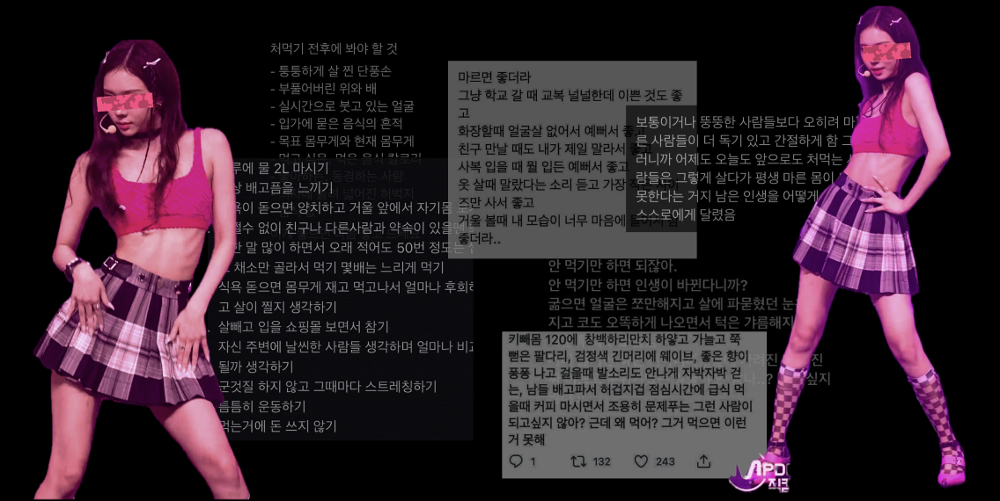
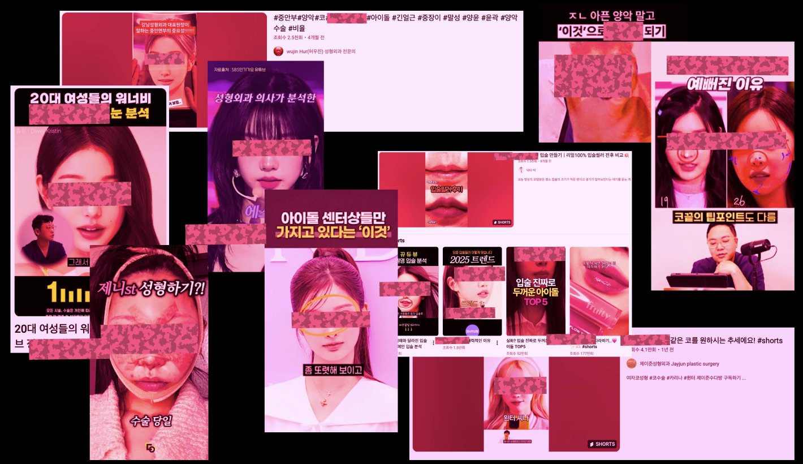
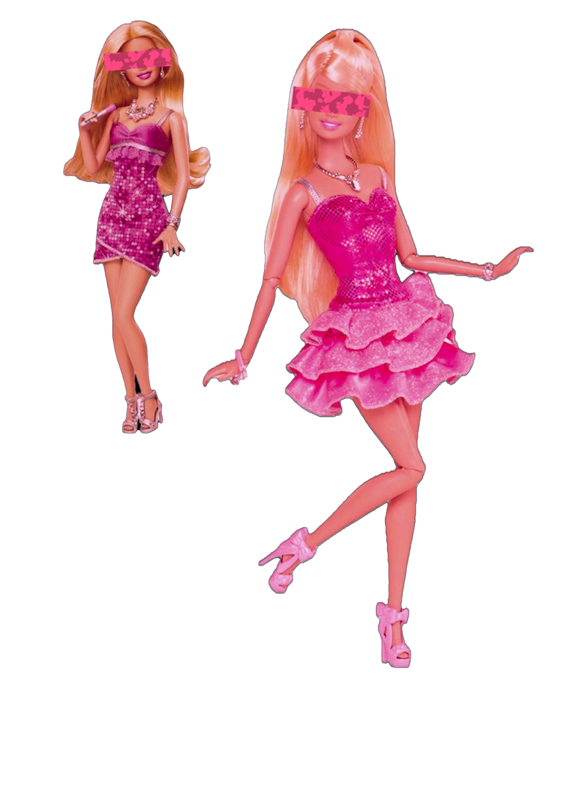
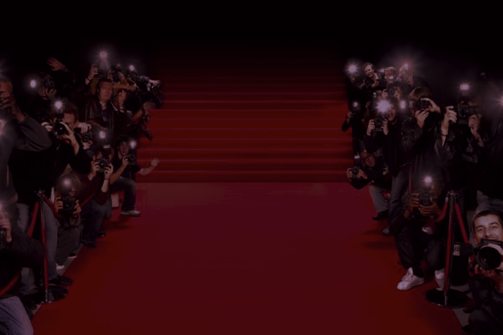
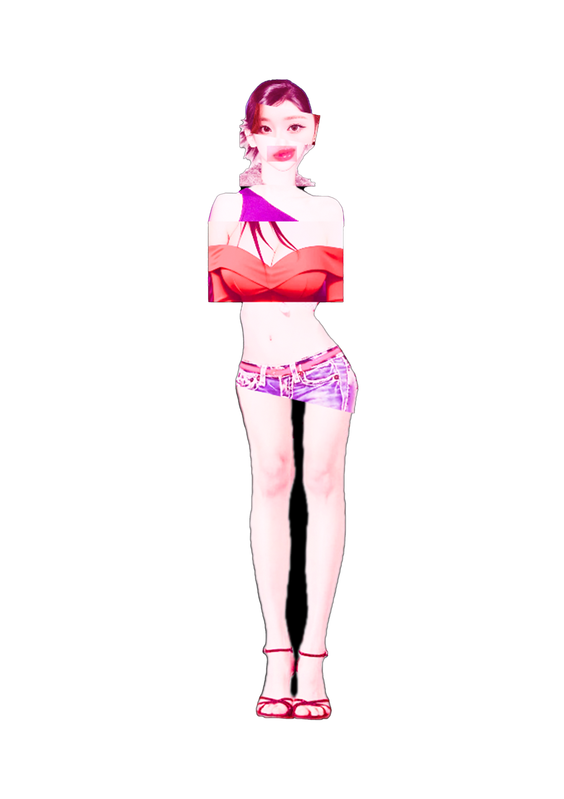
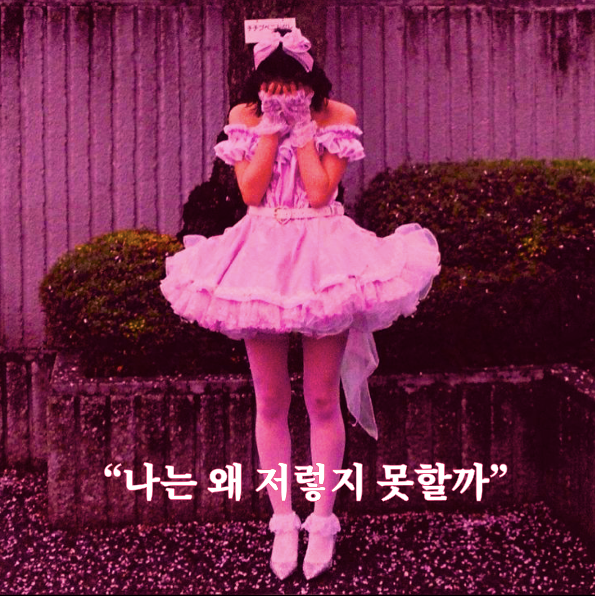
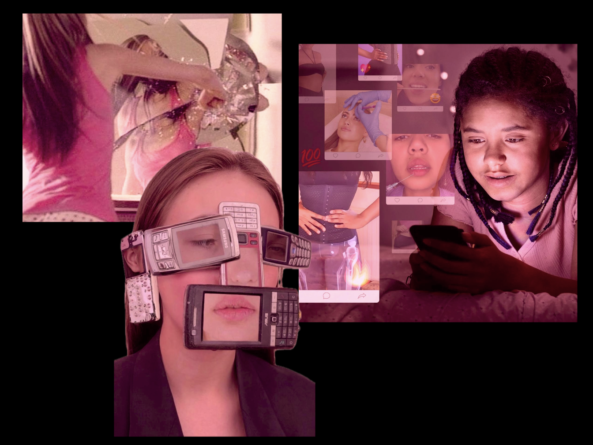
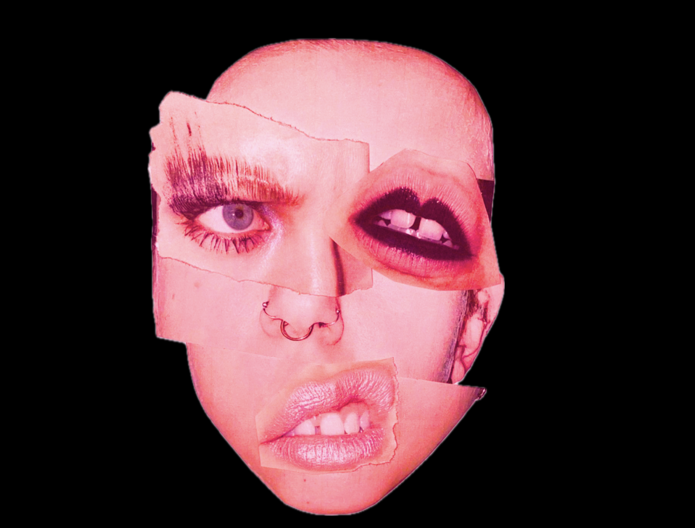

프로아나: 찬성을 뜻하는 Pro-와 거식증을 뜻하는 Ana를 합친 단어
극단전인 저체중을 만들려는 경향으로 한국에선 ‘뼈말라', ‘개말라' 등으로 불리기도 함

극단적으로 마른 아이돌을 미의 기준으로 내세우는 미디어들,
이는 보통을 통통처럼, 앙상하게 마른걸 보기좋게 날씬한 것처럼 만들었다.
그에따라 프로아나를 동경하는 10대들이 증가하게 되었고,
먹토, 초절식, 위고비 등 한창 성장해야 할 10대들에게 적합하지 않은 형태의
다이어트 방법들을 꿀팁이라며 서로 공유하고 있다.
‘키빼몸'(키-몸무게를 숫자로 나타낸 것)이라는 각자의 체형과 건강 등은 하나도 고려하지 않은
이상한 수치가 아름다운 몸매의 기준인냥 떠돌고 있다
건강을 위해서가 아닌,미디어 속 마른 아이돌처럼 되기 위한 비상식적인 다이어트는
섭식장애, 성장부진, 우울증 등 심각한 신체적, 정신적 질병으로 이어진다.#중안부정병 #장원영처럼_해주세요
아이돌의 V라인 턱, 높은 코, 큰 눈은 일종의 성형교본이 된다.
누가 인기있냐에 따라 그들을 선망하는 10대들을 유혹하는 성형외과의 광고들이 쏟아진다.

최근엔 중안부, 인중, 고관절, 흉곽 등 이전엔 신경쓰지 않던 부위 하나하나를 따져가며
십대들을 틀안에 가두고 스스로를 평가하게 만든다
#바비 신드롬
:바비처럼 비현실적인 인형처럼 되기 위해 극단적 다이어트나 성형수술을 감행하는 현상

성장기인 10대에게 코, 턱 등 뼈를 변형시키는 수술은 수습불가능한 심각한 위험성을 동반하며
누군가가 되기 위한 수술은 또 더 예쁜 누군가가 나타날때마다 다시 수술하게 만드는 성형중독으로 이어진다.
#보정없인 못살아_프랑켄슈타인이 된 아이들 A의 큰 눈, B의 높은 코, C의 넓은 골반, D의 작은 얼굴, E의 큰 가슴
그들 각각의 장점만을 모아 미인이라는 이름의 프랑켄슈타인을 만들고, 그것을 아름다움이라 칭한다


아이들은 그에 몰입되어 현실엔 존재하지 않는 미디어의 ‘완벽한 여신'이 되기 위해
자신을 보정해 미디어에 공유하고, 그것을 실제라고 믿는 아이들은 또 자신을 꾸며낸다
그렇게 현실에 없는 여신은 양산된다.
#과잉 이상화
:이상적인 특징만을 골라 한곳에 과잉으로 몰아넣는 현상
. . . .

#사회비교이론 인간은 본능적으로 스스로를 남과 비교한다. 미디어는 가장 화려하고 완벽한 아이돌을 미성숙한 10대에게 지속적으로 노출시킨다.
미디어리터러시가 부족한 10대에게 이는 곧대로 받아들여져 자신을 그들과 비교하게하고,
이러한 상향비교는 상대적 박탈감과 낮은 자존감을 유발한다그리고 이는 실제로는 본인에게 결함이 없거나 사소함에도, 자신의 외모에 심각한 결함이 있다고 느끼는 신체이형장애로 까지 이어진다. 미디어가 주입하는 획일적인 미의 기준은 10대들이 자신의 멀쩡한 신체마저 결함으로 인식하게 한다.
이런 문제의 화살은 미성숙한 아이들이 아닌, 비현실적 이미지를 생산하고 주입하는 우리 사회 전체에게 향해야 한다.우리는 누군가가 아닌 자기 자신일때 가장 아름답다가을-짧은계절
링크를 깃허브에 올리면 나옴
겨울-추운계절
봄으로가기